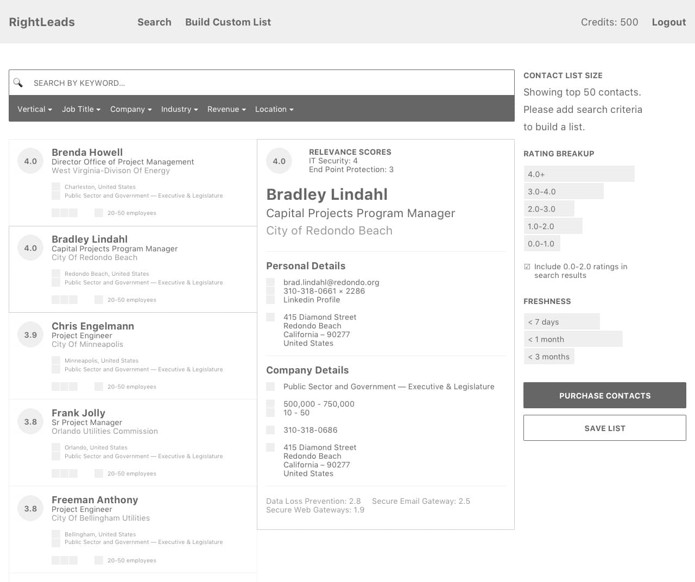
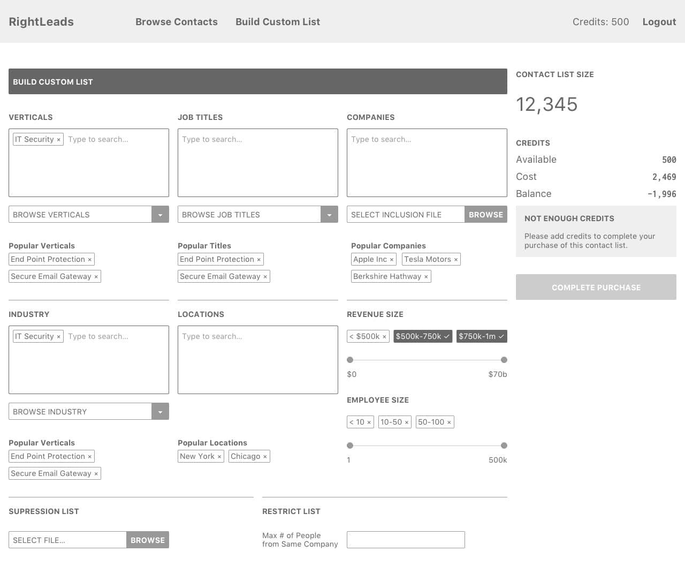
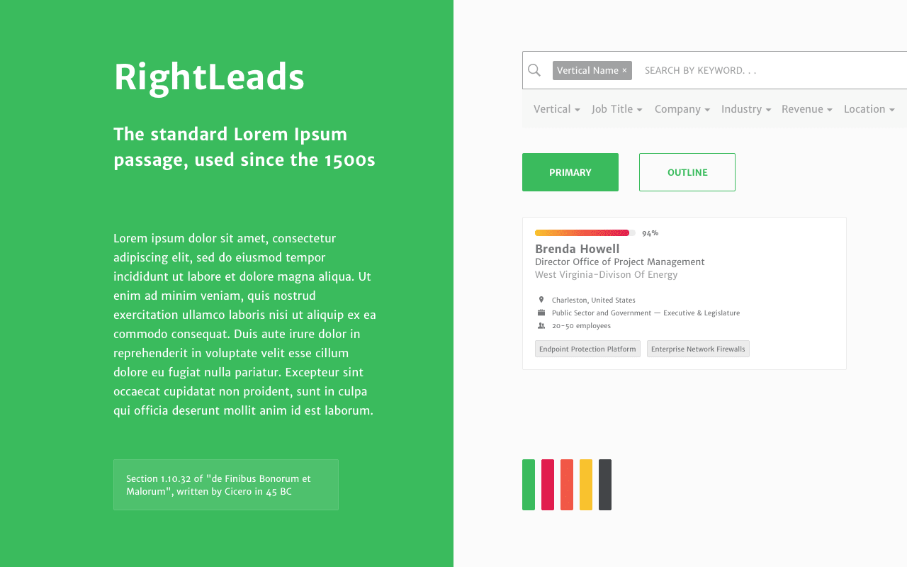
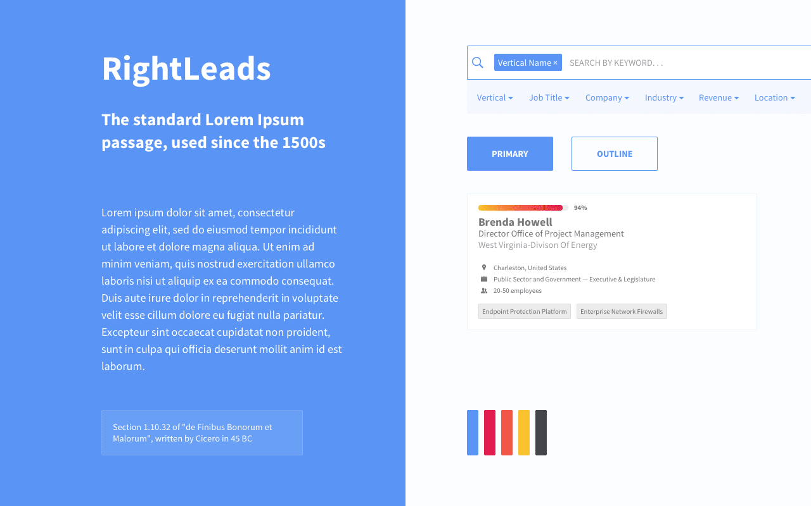
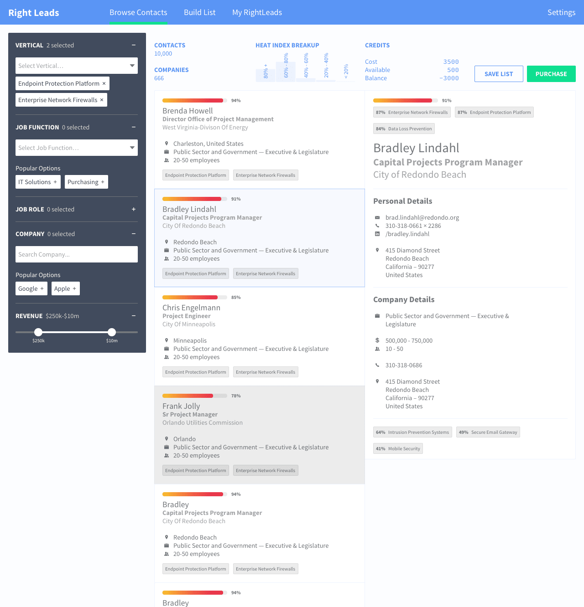
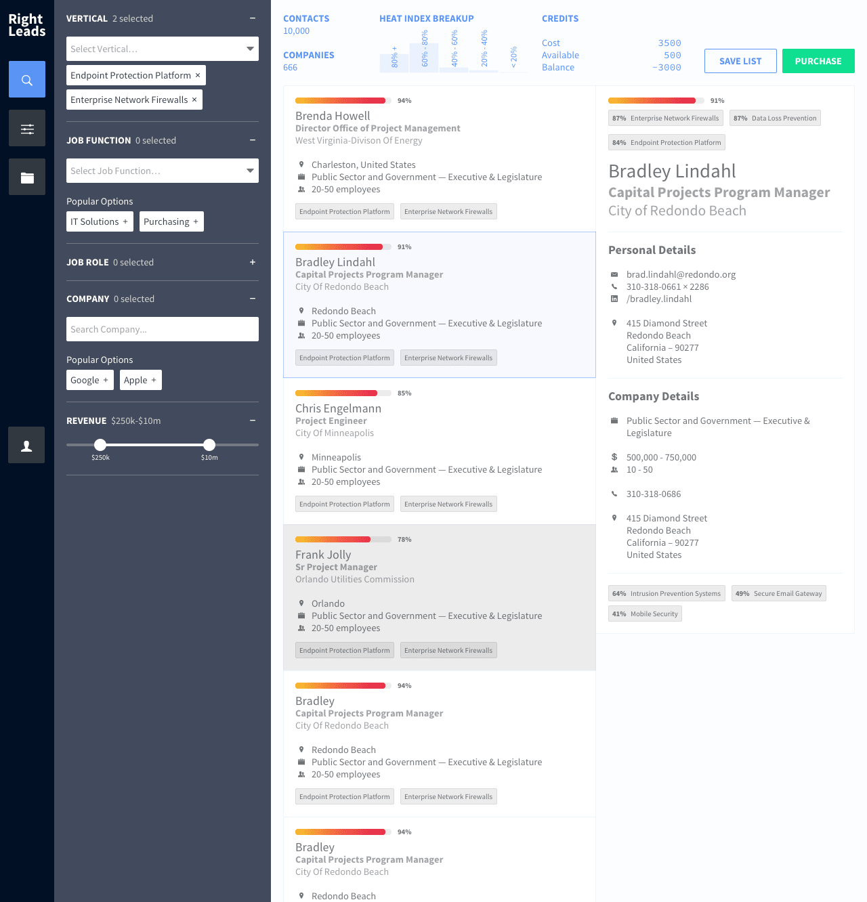

Dashboard design for marketing leads subscription service. Products’s USP is a proprietary algorithm to calculate Heat Index score for each contact based on relevance to search criteria, when it was last updated, and other factors.
Deliverables: wireframes, mocks, HTML/CSS


Wireframes to explore page layout to display as many contacts possible with primary focus on Heat Index score, and ease of searching contacts, building lists, and purchasing the lists.


Exploration of color and font options.


Heat Index score is now shown as a horizontal thermometer instead of the text-overlaid-on-circle option in wireframes. The option of a top navigation vs sidebar navigation was also explored.